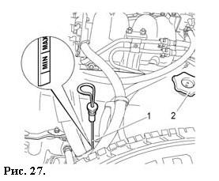
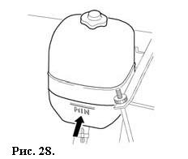
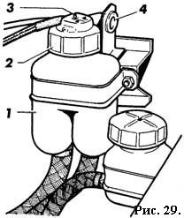

ТЕХНИЧЕСКОЕ ОБСЛУЖИВАНИЕ И ТЕКУЩИЙ РЕМОНТ АВТОМОБИЛЯ
В данном разделе приведено краткое описание некоторых видов работ по техническому обслуживанию и текущему ремонту автомобиля.
Полная технология технического обслуживания, ремонта и утилизации имеется на аттестованных изготовителем ПССС, которые также оснащены специальным оборудованием и инструментом.
В связи с этим, с целью обеспечения высокого качества работ, рекомендуется техническое обслуживание и ремонт проводить на аттестованных изготовителем ПССС.
Периодически после тщательной мойки автомобиля проверяйте состояние защитных резиновых чехлов шарниров приводов передних колес, шаровых опор, а также защитных колпачков шарниров рулевых тяг.
Если чехол или колпачок поврежден или скручен, то в шарнир будут проникать пыль, вода и грязь, что вызовет их усиленный износ и разрушение.
Поэтому поврежденный чехол или колпачок замените новым, а скрученный – поправьте.
При постоянной эксплуатации в зонах с повышенной запыленностью смену фильтрующего элемента воздушного фильтра следует проводить в два раза чаще, чем указано в сервисной книжке.
 УРОВЕНЬ МАСЛА В КАРТЕРЕ ДВИГАТЕЛЯ
При работающем двигателе расход моторного масла — нормальное явление. Величина расхода масла зависит от стиля вождения автомобиля и определяется нагрузкой на двигатель и частотой вращения коленчатого вала.
В начальный период эксплуатации расход масла несколько повышен. Поэтому регулярно, особенно перед дальними поездками, следует проверять уровень масла в картере двигателя.
Уровень масла проверяется на холодном неработающем двигателе при нахождении автомобиля на горизонтальной поверхности.
Уровень должен находиться между метками «MIN» и «MAX» указателя 1 (рис. 27). При необходимости доливка масла производится через горловину, закрываемую пробкой 2.
После доливки уровень масла следует контролировать не ранее, чем через три минуты, чтобы долитая порция масла успела стечь в картер.
Для правильного измерения необходимо вставлять указатель уровня 1 в его установочное отверстие до упора.
ВНИМАНИЕ!
Не допускается превышение уровня масла в картере двигателя выше метки «MAX» указателя 1 во избежание выброса масла через систему вентиляции картера.
Масло будет попадать в камеру сгорания и вместе с отработавшими газами выбрасываться в атмосферу.
На автомобилях, оснащенных каталитическим нейтрализатором, продукты сгорания масла могут вывести нейтрализатор из строя.
УРОВЕНЬ ОХЛАЖДАЮЩЕЙ ЖИДКОСТИ
Уровень охлаждающей жидкости должен быть выше не более 40 мм метки «MIN», нанесенной на полупрозрачном корпусе бачка (рис. 28).
Проверку уровня и открытие пробки бачка для доливки жидкости проводите только на холодном двигателе.
После заливки жидкости пробка должна быть плотно завернута для исключения попадания пыли в бачок.
ВНИМАНИЕ!
Во избежание ожогов не открывайте пробку радиатора системы охлаждения двигателя при горячей охлаждающей жидкости.
В тех случаях, когда уровень жидкости постоянно понижается и приходится часто доливать ее, проверьте герметичность системы охлаждения и устраните неисправность на аттестованных ПССС.
УРОВЕНЬ ТОРМОЗНОЙ ЖИДКОСТИ
Уровень жидкости в бачке 1 (рис. 29) при установленной крышке 2 должен быть по нижнюю кромку заливной горловины.
Для визуального контроля бачок выполнен из полупрозрачного материала.
Нажатием толкателя 3 на крышке бачка проверьте исправность работы датчика аварийного уровня: при включенном зажигании в комбинации приборов должна загореться лампа аварийного состояния рабочей тормозной системы.
При эксплуатации автомобиля особое внимание уделяйте состоянию гибких шлангов, так как они подвергаются воздействию воды, грязи, песка и соли.
В случае выявления мелких трещин на наружной оболочке шланга или при появлении вздутий при нажатии на педаль тормоза необходимо произвести замену шланга на новый.
Через три года эксплуатации тормозную жидкость в системе необходимо заменить.
Это связано с тем, что тормозная жидкость впитывает влагу из окружающей среды, которая приводит к понижению ее температуры кипения.
Кроме того, содержание воды может вызвать коррозию деталей рабочей тормозной системы.
Тормозная жидкость ядовита!
Поэтому ее следует хранить в плотно закрытой таре и вне досягаемости детей.
Не допускайте попадания тормозной жидкости на лакокрасочное покрытие кузова — это может привести к его повреждению.
На кронштейне бачка гидропривода тормозов в вариантном исполнении имеется патрон 4 подключения переносной лампы.